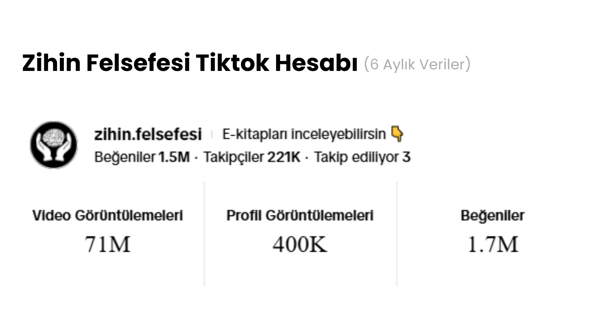
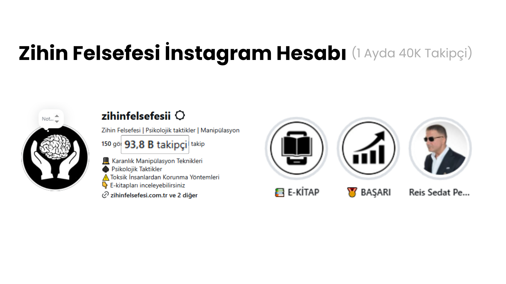
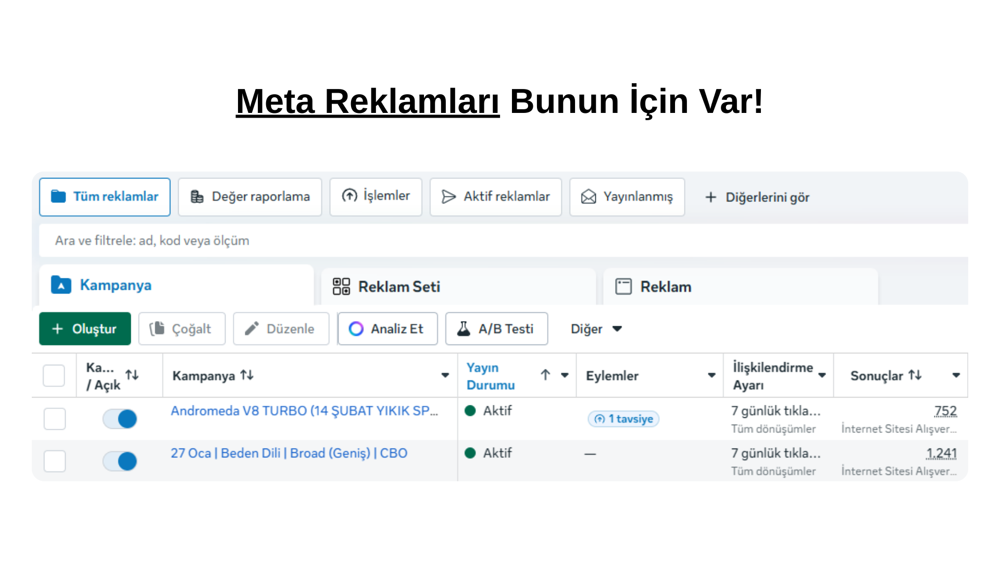
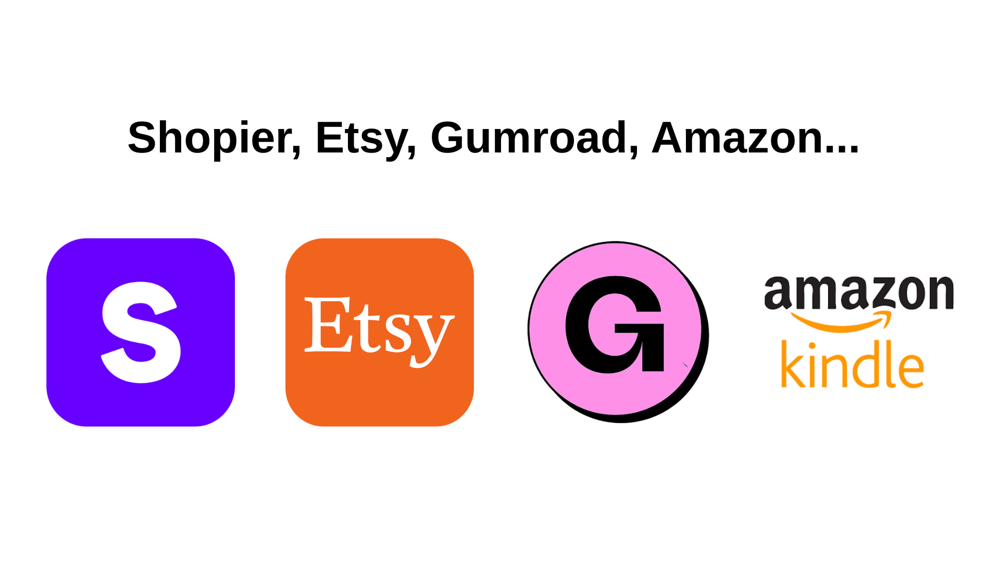
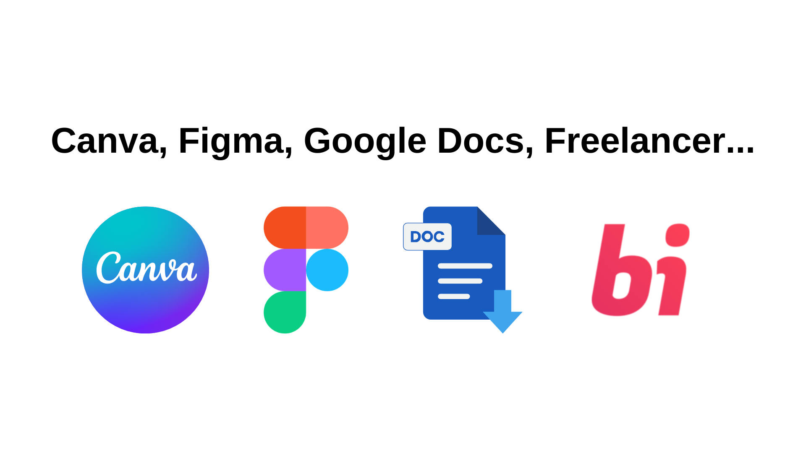

Merhaba, ben Enes. 20 yaşındayım. Uzun süredir internetten para kazanma ve yapay zeka alanlarında kendimi aktif olarak geliştiriyorum. Son 4 aydır ise özellikle PDF Metodu üzerine yoğunlaştım. Bu süreçte binlerce e-kitap satışı gerçekleştirdim ve satışlarım aktif olarak devam ediyor.
Bu zamana kadar edindiğim tüm bilgi ve tecrübeleri, 16 videodan oluşan kapsamlı bir eğitim setinde topladım. Eğitimleri; kısa, sade ve herkesin anlayabileceği şekilde anlatmaya özellikle özen gösterdim. Türkiye’de son dönemde “dropshipping” kurslarının adeta bir bitki örtüsü gibi her yeri sarması, çoğunun da gerçekçi olmayan vaatler sunması nedeniyle; bu sisteme alternatif olarak Türkiye’de ilk kez, tamamen otomasyon mantığına dayalı, sürdürülebilir bir kazanç modeli olan PDF Metodu’nu hazırladım.
Bu eğitimde; işi yasal çerçevede nasıl yapacağınızdan, doğru ürün seçimine, e-kitap içeriği hazırlamadan profesyonel kapak tasarımına, fiyatlandırmadan satış ve otomasyon süreçlerine kadar adım adım her detayı anlatıyorum. Shopier üzerinden e-kitap satan birçok kişi var; ancak bu işi bu kadar sistemli, şeffaf ve profesyonel şekilde ele alan çok az kişi bulunuyor.
Amacım; hayal satmak değil, gerçekten uygulanabilir, dürüst ve sonuç alınabilir bir sistem sunmak. Eğer internetten para kazanma konusunda somut ve mantıklı bir yol arıyorsan, bu eğitim tam olarak bunun için hazırlandı.

TikTok: TikTok'a Instagram'dan sonra giriş yaptım ve başlarda sahip olduğum önyargı için çok pişmanım. Kısa sürede ciddi bir kitleye ulaştım ve sadece 6 ay içinde ekranda gördüğünüz bu verileri elde ettim. Instagram'da uzun sürede alamadığım sonuçları, TikTok'ta ulaştığım milyonluk izlenmeler sayesinde kısa zamanda yakaladım ve binlerce sipariş aldım. Özellikle kişisel gelişim, psikoloji ve beden dili üzerine ürettiğim kısa içerikler, bu platformda inanılmaz bir karşılık buldu.

Instagram: Instagram, Zihin Felsefesi projem için attığım en doğru adımlardan biriydi. 2024'te açtığım bu hesapta ilk ayımda 40.000 takipçi kazandım; ancak başlarda uyguladığım yanlış strateji (arkaya rahatlatıcı videolar koyup önüne altyazı eklemek) nedeniyle binlerce izlenmeye rağmen neredeyse hiç sipariş alamıyordum. Bu benim en büyük hatam ve aynı zamanda en değerli dersim oldu. Ne zaman ki yabancı piyasada kanıtlanmış içerik stratejilerini (tam olarak eğitimde anlattığım sistemle) kendi tarzıma uyarlayıp profesyonel bir şablona oturttum, işte o zaman satışlarım ciddi bir ivme kazandı. İnsanlara kaliteli ve gerçek bilgiler sunduğum için etkileşim oranlarım arttı ve buna paralel olarak satışlarım da sürekli bir büyüme trendine girdi.

Aslında sosyal medyadan 1 satış geliyorsa, Meta reklamlarından bunun 10 katı daha fazla satış alabilirsiniz. Mantıken baktığınızda, sosyal medya platformlarının izleyici kitlesi çok geniştir ve net bir kitle hedeflemesi yapmak zordur. Bazen videolarınız yurtdışında bile viral olabilir (benim beden dili videolarım buna güzel bir örnektir). Üstelik organik içerik üretmenin riski yoktur; videoyu atarsınız, izlenir ve sipariş gelir. Medyada sizi izleyen insanların işleyişi temelde budur.
Fakat Meta reklamlarında oyunun kuralları tamamen değişir. Sosyal medyada deneyip iyi sonuç aldığınız veya güvendiğiniz bir kreatifi (gönderiyi), eğitimde detaylıca anlattığım stratejilerle Meta'da reklama çıkarsanız, asıl o zaman hedeflediğiniz rakamlara ulaşabilirsiniz. Aksi takdirde, sadece organik medya pazarlamasıyla ve içerik üreterek sizi tatmin edecek rakamlara ulaşmanız epey bir zordur.
Tabii ki Meta reklamlarına bir bütçe ayırdığınız için para kaybetme riskiniz diğerine göre daha fazladır. Ancak risk almadan büyük paralar kazanmanız mümkün değildir. Bu yöntem, sıfır sermayesi olanlar için maalesef uygun değildir. (Ben her zaman gerçekleri söylerim; "sıfır sermaye" deyip size Meta reklamlarını anlatanlardan uzak durmanızı tavsiye ederim.)

E-kitap veya dijital ürün satışı yapabileceğiniz sayısız platform var. Ancak ben şu anda tamamen Türkiye pazarına odaklanmış durumdayım ve henüz global pazara girmedim. Bu yüzden gerek benim için gerekse potansiyel müşterilerimin güvenliği ve kolaylığı için en doğru seçenek Shopier oldu.
Eğitimimde, Türkiye şartlarında herkese en uygun olacağını düşündüğüm için Shopier'in gerçekten profesyonel kullanımını tüm detaylarıyla gösterdim. "Shopier işte, bilgilerini girip kayıt oluyorsun, ürün ekleyip satışa başlıyorsun" demeyin; olay kesinlikle bundan ibaret değil.
Müşterilerinizin sitenizde kaç saniye durduğu, hangi ürünleri incelediği, hangi butonlara tıkladığı ve neleri satın aldığı gibi tüm kritik verileri Shopier üzerinden takip edebiliyorsunuz. Bu verileri Meta Piksel ile eşleştirerek Retargeting (Yeniden Pazarlama) gibi stratejilerle reklam çıkmak, satışlarınızı devasa oranlarda artırmak için harika bir yöntemdir.
Hatta vizyonu biraz daha genişletip, çok ufak maliyetlerle kendi dijital ürün teslimat altyapınızı nasıl kuracağınızı da anlattım. Bu sayede müşterilerinize özel bir "E-kitap okuma (E-book reader)" sitesi sunabilir ve kendi markanız üzerinden e-posta pazarlaması yaparak (indirim kodlarıyla vb.) siparişlerinizi çok rahat 2 katına çıkarabilirsiniz. Hiçbir teknik bilgisi olmayan birinin bile çok rahatlıkla anlayabileceği şekilde basit, adım adım bir sistem kurdum.
Hayır, kesinlikle şirkete gerek yoktur. Türkiye'den bu sistemi kurmak istiyorsanız "Sosyal medya vergi muafiyeti" hesabı açarak eğitim amacıyla sattığınız e-kitapların vergisi banka hesabınıza gelen paranın %15 kesilerek otomatik olarak ödeniyor.
Daha detaylı bilgi için bu videoyu (kaynaktır, tıklayın) izleyebilirsiniz. Ne KDV, ne beyanname, ne muhasebeci; bunlara hiç gerek yok.
Fakat burada sıkıntılı bir durum var: Bunu yaptığınızda 4-B sigortalı sayılıyorsunuz ve her ay (2026 itibariyle) ortalama 10.000 TL Bağ-Kur borcunuz çıkacaktır. Bunu mutlaka dikkate almanız gerekiyor.
Bu durumda benim eğitimde anlatmadığım fakat yakında yapıp eğitime eklemeyi düşündüğüm 'İngiltere'de şirket açma' konusu devreye giriyor. Bu yöntemle birlikte daha avantajlı bir şekilde verginizi daha basitçe ödeyerek (yıllık %19 kurumlar vergisi) şirketiniz olmuş oluyor. Ama bunu araştırmanızı tavsiye ederim, bir bilen ile konuşun. Benim şuanlık net bir fikrim yok, benim de araştırma sürecim devam ediyor.

E-kitap yazımı için en iyi ve profesyonel yol, bütçenize uygun bir fiyat belirleyerek bu işi bir uzmana (freelancer'a) devretmektir. Konuyu bilseniz de bilmeseniz de, e-kitabı baştan sona kendiniz yazmaya kalkmak, hangi platformu kullanırsanız kullanın inanılmaz fazla zamanınızı alacaktır.
Şundan emin olabilirsiniz: E-kitabınız satışa çıktığında elde edeceğiniz gelir, yazım için freelancer'a ödeyeceğiniz ücreti fazlasıyla karşılayacaktır. Yani kendi değerli vaktinizi harcamaya gerçekten değmez.
Tabii ki sıfır sermaye ile başlıyorsanız ve bir yazara verecek bütçeniz yoksa iş başa düşüyor demektir. Bu durumda mecburiyetten kendi kitabınızı kendiniz yazacaksanız, kullanabileceğiniz en iyi, en pratik araç kesinlikle Canva'dır.
Zoom Desteği:
Bu eğitim hem sadece paket olarak izleyebileceğiniz formatta hem de birebir Zoom desteği ile birlikte satın alınabilmektedir. (Bu destek klasik anlamda bir "koçluk" değildir; birebir yayın üzerinden sorularınıza 1:1 yardımcı olduğumuz, eğitim pratiğinde size eşlik ettiğimiz bir görüştür.)
Ödeme Yaptıktan Sonra Ne Oluyor?
Shopier üzerinden paketi aldığınızda, sistem sizi anlık olarak veritabanına ekler. Hemen sonrasında pdfmetodu.com.tr eğitim sitemizden size verilen kayıtlı e-mail adresiniz ve tarafınıza iletilen şifre (kodunuzla) kolayca giriş yapıyorsunuz. Giriş yaptıktan sonra 1.5 saatlik ve toplam 16 derslik eğitim videomuz sizi karşılıyor olacak.
Eğitim Tek Seferlik Mi Yoksa Abonelik Mi?
Eğitim tamamen tek seferliktir ve her zaman güncel kalacak şekilde ilerleyen zamanlarda yenilenecektir. Gelecek her yeni güncellemede sistemde kayıtlı olan tüm öğrencilere anında e-mail üzerinden bildirim gidecektir.